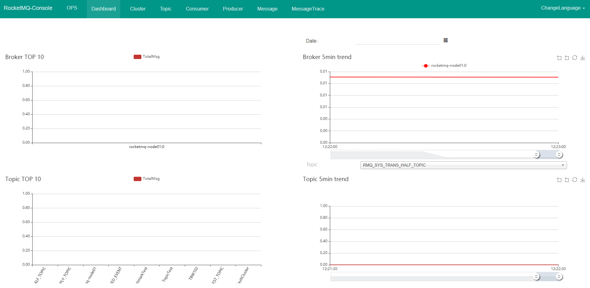
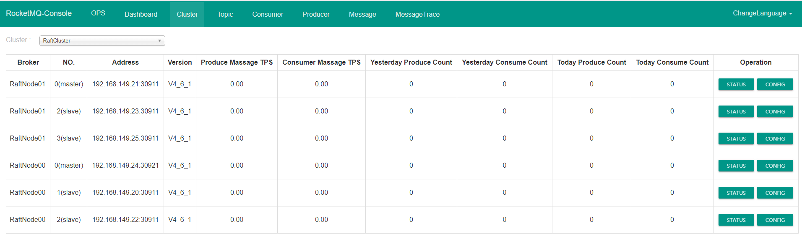

RocketMq 是阿里开源的一个高性能，分布式消息中间件，运行机制类似kafka但是又有许多不同之处，对于一些特殊场景更适合RocketMq。
RocketMq的组件角色
RocketMq中有以下几个组件组成：
- NameServer， 负责存储Brocker的信息，用于MessageQueue的路由
- Producer， 消息生产者
- Consumer， 消息消费者
- Brocker， 负责实际的消息存储与分发
NamerServer可以是多台，每个NamerServer是独立的，不相互通信，每个Brocker启动时都会连接到每个NameServer，注册自己的信息，每个Brocker和NameServer都保持心跳机制。
当消息产生或消费时，Producer和Consumer首先从NameServer处获取Brocker列表信息，选择一个Brocker，然后直接发送或拉取消息。
消息的消费是以group为单位，消费模式默认为集群模式，即同一个组里的消费者只要有一个消费者消费掉对应的topic消息，同一组的其他消费者不再消费相同的消息。
当消费模式为广播时，所有的订阅消费者都会消费到消息。
RocketMq的安装与环境搭建
- 下载maven
|
|
- 从github上下载rocketmq-master.zip 代码主分支 和 rocket-external-master.zip扩展分支
- 解压rocketmp-master.zip后，使用mvn编译代码
|
|
- 编译结束后的找到编译后的目录distribution -> target -> rocketmq-4.6.1 -> rocketmq-4.6.1
- 移动此目录到/usr/local下
- 在/usr/local/rocketmq-4.6.1/bin下，启动NameServer
|
|
-
启动broker， 根据系统配置可能需要更改启动时java的jvm配置,修改相应-Xms -Xmx -Xmn 参数的值
runserver.sh
1 2 3 4 5 6 7 8 9choose_gc_log_directory JAVA_OPT="${JAVA_OPT} -server -Xms1g -Xmx1g -Xmn512m -XX:MetaspaceSize=128m -XX:MaxMetaspaceSize=320m" JAVA_OPT="${JAVA_OPT} -XX:+UseConcMarkSweepGC -XX:+UseCMSCompactAtFullCollection -XX:CMSInitiatingOccupancyFraction=70 -XX:+CMSParallelRemarkEnabled -XX:SoftRefLRUPolicyMSPerM B=0 -XX:+CMSClassUnloadingEnabled -XX:SurvivorRatio=8 -XX:-UseParNewGC"JAVA_OPT="${JAVA_OPT} -verbose:gc -Xloggc:${GC_LOG_DIR}/rmq_srv_gc_%p_%t.log -XX:+PrintGCDetails" JAVA_OPT="${JAVA_OPT} -XX:+UseGCLogFileRotation -XX:NumberOfGCLogFiles=5 -XX:GCLogFileSize=30m" JAVA_OPT="${JAVA_OPT} -XX:-OmitStackTraceInFastThrow"runbroker.sh
1 2 3 4 5 6 7 8choose_gc_log_directory JAVA_OPT="${JAVA_OPT} -server -Xms1g -Xmx1g -Xmn512m" JAVA_OPT="${JAVA_OPT} -XX:+UseG1GC -XX:G1HeapRegionSize=16m -XX:G1ReservePercent=25 -XX:InitiatingHeapOccupancyPercent=30 -XX:SoftRefLRUPolicyMSPerMB=0" JAVA_OPT="${JAVA_OPT} -verbose:gc -Xloggc:${GC_LOG_DIR}/rmq_broker_gc_%p_%t.log -XX:+PrintGCDetails -XX:+PrintGCDateStamps -XX:+PrintGCApplicationStoppedTime -XX:+PrintAdaptiv eSizePolicy"JAVA_OPT="${JAVA_OPT} -XX:+UseGCLogFileRotation -XX:NumberOfGCLogFiles=5 -XX:GCLogFileSize=30m" JAVA_OPT="${JAVA_OPT} -XX:-OmitStackTraceInFastThrow" JAVA_OPT="${JAVA_OPT} -XX:+AlwaysPreTouch" -
设置机器名， 启动过程中会有错误，找不到主机名
1vim /etc/hosts添加类似下面这行：
192.168.149.20 rocketmq-node01
-
启动broker
1 2 3[root@rocketmq-node01 bin]# ./mqbroker -n localhost:9876 OpenJDK 64-Bit Server VM warning: If the number of processors is expected to increase from one, then you should configure the number of parallel GC threads appropriately using -XX:ParallelGCThreads=NThe broker[rocketmq-node01, 192.168.149.20:10911] boot success. serializeType=JSON and name server is localhost:9876 -
测试消息，首先修改tools.sh文件，把NameServer地址传进去
1 2 3 4 5 6 7 8 9 10 11 12 13 14 15 16export JAVA_HOME export JAVA="$JAVA_HOME/bin/java" export BASE_DIR=$(dirname $0)/.. export CLASSPATH=.:${BASE_DIR}/conf:${CLASSPATH} export NAMESRV_ADDR=localhost:9876 #=========================================================================================== # JVM Configuration #=========================================================================================== JAVA_OPT="${JAVA_OPT} -server -Xms1g -Xmx1g -Xmn256m -XX:MetaspaceSize=128m -XX:MaxMetaspaceSize=128m" JAVA_OPT="${JAVA_OPT} -Djava.ext.dirs=${BASE_DIR}/lib:${JAVA_HOME}/jre/lib/ext:${JAVA_HOME}/lib/ext" JAVA_OPT="${JAVA_OPT} -cp ${CLASSPATH}" $JAVA ${JAVA_OPT} $@ -
启动测试脚本:
-
生产消息
1 2 3 4 5 6 7 8 9 10 11[root@rocketmq-node01 bin]# ./tools.sh org.apache.rocketmq.example.quickstart.Producer 02:59:01.494 [main] DEBUG i.n.u.i.l.InternalLoggerFactory - Using SLF4J as the default logging framework RocketMQLog:WARN No appenders could be found for logger (io.netty.util.internal.PlatformDependent0). RocketMQLog:WARN Please initialize the logger system properly. SendResult [sendStatus=SEND_OK, msgId=C0A8951400006BC7C0540AF0A1280000, offsetMsgId=C0A8951400002A9F0000000000024D8A, messageQueue=MessageQueue [topic=TopicTest, brokerName=ro cketmq-node01, queueId=0], queueOffset=186]SendResult [sendStatus=SEND_OK, msgId=C0A8951400006BC7C0540AF0A1460001, offsetMsgId=C0A8951400002A9F0000000000024E53, messageQueue=MessageQueue [topic=TopicTest, brokerName=ro cketmq-node01, queueId=1], queueOffset=186]SendResult [sendStatus=SEND_OK, msgId=C0A8951400006BC7C0540AF0A14A0002, offsetMsgId=C0A8951400002A9F0000000000024F1C, messageQueue=MessageQueue [topic=TopicTest, brokerName=ro cketmq-node01, queueId=2], queueOffset=186]SendResult [sendStatus=SEND_OK, msgId=C0A8951400006BC7C0540AF0A1700003, offsetMsgId=C0A8951400002A9F0000000000024FE5, messageQueue=MessageQueue [topic=TopicTest, brokerName=ro cketmq-node01, queueId=3], queueOffset=186]SendResult [sendStatus=SEND_OK, msgId=C0A8951400006BC7C0540AF0A1760004, offsetMsgId=C0A8951400002A9F00000000000250AE, messageQueue=MessageQueue [topic=TopicTest, brokerName=ro cketmq-node01, queueId=0], queueOffset=187]SendResult [sendStatus=SEND_OK, msgId=C0A8951400006BC7C0540AF0A1820005, offsetMsgId=C0A8951400002A9F0000000000025177, messageQueue=MessageQueue [topic=TopicTest, brokerName=ro cketmq-node01, queueId=1], queueOffset=187] -
消费消息
1./tools.sh org.apache.rocketmq.example.quickstart.Consumer
-
-
安装控制台， 解压扩展包
1[root@rocketmq-node01 rocketmq-console]# unzip rocketmq-externals-master.zip进入目录${pwd}/rocketmq-externals-master/rocketmq-console
-
编译项目
|
|
编译结束，在target目录中生产一个jar包：
```sh
[root@rocketmq-node01 rocketmq-console]# cd target
[root@rocketmq-node01 target]# ls
checkstyle-cachefile checkstyle-result.xml generated-sources maven-status rocketmq-console-ng-1.0.1.jar.original
checkstyle-checker.xml classes maven-archiver rocketmq-console-ng-1.0.1.jar rocketmq-console-ng-1.0.1-sources.jar
[root@rocketmq-node01 target]# mv rocketmq-console-ng-1.0.1.jar /usr/local
[root@rocketmq-node01 target]# cd /usr/local
[root@rocketmq-node01 local]# ls
bin etc games include lib lib64 libexec maven rocketmq-4.6.1 rocketmq-console-ng-1.0.1.jar sbin share src
```
- 启动控制台
1[root@rocketmq-node01 local]# java -jar rocketmq-console-ng-1.0.1.jar --rocketmq.config.namesrvAddr=127.0.0.1:9876启动后控制界面：  这里可以看到有对Consumer,Topic,Producer,Cluster的管理
RocketMq集群
RocketMq在4.6之前集群方式不支持动态选举主节点，配置文件给出示例为两主两从，异步或者同步复制数据
|
|
配置目录中树结构给出了各种配置文件，在4.6版本开始Dledger方式采用Raft协议在集群中选择主节点，默认要求至少三个节点一个broker集群，不然算法选不出主节点。
- 进入文件dledger->broker-n0.conf配置集群信息
1 2 3 4 5 6 7 8 9 10 11 12brokerClusterName=RaftCluster brokerName=RaftNode01 listenPort=30911 namesrvAddr=192.168.149.20:9876 storePathRootDir=/tmp/rmqstore/node00 storePathCommitLog=/tmp/rmqstore/node00/commitlog enableDLegerCommitLog=true dLegerGroup=RaftNode01 dLegerPeers=n0-192.168.149.21:40911;n1-192.168.149.23:40911;n2-192.168.149.25:40911 ## must be unique dLegerSelfId=n1 sendMessageThreadPoolNums=16 - 启动broker节点：
1 2 3[root@rocketmq-node06 ~]# cd /usr/local/rocketmq-4.6.1/bin/ [root@rocketmq-node01 bin]# ./mqbroker -c ../conf/dledger/broker-n0.conf - 按照规则启动6个节点，两个broker集群，每个集群一个主节点，两个从节点，效果如下图： 
RocketMq消息的产生与消费
和spring boot整合，导入依赖
|
|
RocketMqConfig.java
|
|
MainController.java
|
|
消息的过滤
-
生产者在发送消息时，可以指定消息的key 或者 Tag，消费者在消费同一个topic时可以通过Key或者Tag过滤消息订阅。
-
sql表达式过滤， rocketmq定义了一些简单的类似sql语法的过滤消息方式。 首先需要在broker.conf文件中配置
1enablePropertyFilter=true在发送消息时加入自定义的属性值， 在消费端订阅时，根据属性条件构造一个MessageSelector参数。
1 2MessageSelector selector = MessageSelector.bySql("age > 18"); consumer.subscribe("topic01", selector);1 2 3Message topic01 = new Message("topic01", "message test".getBytes()); topic01.putUserProperty("age","18"); return producer.send(topic01);
事务消息
可以利用rocketMq的事务消息实现分布式事务。
生产者服务首先发送一个标记为待投递的消息，称为Half Message,这种消息需要二次确认才能被消费者消费，如果发送成功，则开始执行本地事务，事务执行过程中如果失败，则发送RocketMQ一条回滚消息，回滚之前的Half Message,如果执行成功，则发送确认消息，此时该消息可以被消费者服务消费。
消息存储机制与零拷贝
RocketMQ使用磁盘存储消息，分布在多个Broker节点上，一个topic被分成多个队列Queue，这些消息队列被分散到多个Broker节点的文件系统中。
Broker维护CommitLog文件实现消息的读写，CommitLog是顺序写的，以提高性能，在写入过程中使用零拷贝技术，mmap避免数据在内核空间和用户空间之间的拷贝。 消息存储文件目录：
|
|